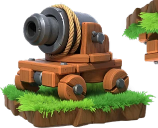

Cannon Cart (Builder Base)
Updated: 26 August 2026 · By the Goblins Farm team
A Cannon on wheels?! Wait, did it just turn into a Mortar?? Bet they won´t see that coming! Both powerful and versatile!
Reference page. This entry carries verified level data but does not yet have a written strategy section. Behaviour and counter notes are being added across the wiki; the tables below are as complete as the source snapshot allows.
- Housing space
- 16
- Levels
- 14
- Village
- Builder Base
- Targets
- Ground only
- Range
- 4.5 tiles
- Moves
- Ground
Stats by level
| Level | Hitpoints | DPS | Upgrade cost | Upgrade time | Builder Hall |
|---|---|---|---|---|---|
| 1 | 666 | 115 | — | — | 5 |
| 2 | 666 | 115 | 1,000,000 Builder Elixir | 1 d | 5 |
| 3 | 732 | 130 | 1,100,000 Builder Elixir | 1 d 12 h | 5 |
| 4 | 732 | 130 | 1,200,000 Builder Elixir | 2 d | 5 |
| 5 | 805 | 150 | 1,400,000 Builder Elixir | 2 d | 6 |
| 6 | 805 | 150 | 1,600,000 Builder Elixir | 2 d 12 h | 6 |
| 7 | 886 | 170 | 2,400,000 Builder Elixir | 3 d 12 h | 7 |
| 8 | 886 | 170 | 2,600,000 Builder Elixir | 4 d 12 h | 7 |
| 9 | 974 | 190 | 3,400,000 Builder Elixir | 5 d 12 h | 8 |
| 10 | 974 | 190 | 3,600,000 Builder Elixir | 5 d 12 h | 8 |
| 11 | 1,072 | 215 | 4,100,000 Builder Elixir | 6 d | 9 |
| 12 | 1,072 | 215 | 4,300,000 Builder Elixir | 6 d | 9 |
| 13 | 1,179 | 240 | 5,300,000 Builder Elixir | 6 d 12 h | 10 |
| 14 | 1,179 | 240 | 5,700,000 Builder Elixir | 6 d 12 h | 10 |
Where these numbers come from. Read from Clash of Clans' own game files, client build 18.400.21. They are exact for that build and do not reflect anything released after it, so verify in game before committing an upgrade.
Game values are read from Supercell's own game files, reproduced as fan content under Supercell's Fan Content Policy. Goblins Farm is not affiliated with, endorsed, sponsored, or specifically approved by Supercell, and Supercell is not responsible for it.
Goblins Farm is not affiliated with, endorsed by, sponsored by, or specifically approved by Supercell. Clash of Clans is a trademark of Supercell Oy. This material is unofficial fan content produced under Supercell's Fan Content Policy. Game values change with every update; always verify in-game before committing an upgrade.